Decipherment
Day 26: Proto-Indo-European, the Vinča Script, and Working on Video Games
Reminder
Reminder
Next week: original decipherment week! Attendance required.
Today
- Far Cry Primal (2016)
- PIE time
- The Vinča script
Far Cry Primal
What is Far Cry Primal (2016)?
The Three Tribes

Wenja
The Three Tribes

Udam
The Three Tribes

Izila
Wenja & Udam speak Winja
Izila speak His-hilax
ConLangs
Both Wenja & Izila are conlangs
Conlang = “constructed language” vs. “natural language”
ConLangs: Artistic Languages

One ring to…
ConLangs: Artistic Languages

Na’vi
What Are Wenja & Izila?
Artistic conlangs based in reality — both based on Proto-Indo-European, source of:
- English
- Spanish
- Russian
- Farsi
- Greek
- Hindi, etc.
Who Were the Proto-Indo-Europeans?
Indo-European Migrations

PIE migrations
The Indo-European Languages

IE Languages
How Do We Even Know What PIE Looked Like?
- We compare segments across languages and set up correspondence sets:
| Greek | Latin | Sanskrit | English | Old Irish | Definition |
|---|---|---|---|---|---|
| pʰrāter | frāter | bʰrātar | brother | bráthair | ‘brother’ |
| pʰer- | fer- | bʰar- | bear | -ber | ‘carry’ |
How Do We Even Know What PIE Looked Like?
Reconstructed forms:
- PIE: *bʰraχter
- PIE: *bʰer-
| Greek | Latin | Sanskrit | English | Old Irish | Definition |
|---|---|---|---|---|---|
| pʰrāter | frāter | bʰrātar | brother | bráthair | ‘brother’ |
| pʰer- | fer- | bʰar- | bear | -ber | ‘carry’ |
Why PIE for Primal (and Not Caveman English)?

Geico Caveman
Why Me?

Archaeology Magazine, 2013
Reconstructing PIE culture
Reconstructing PIE culture
> Proto-words give us a look at what those speakers had access to in their environment
Reconstructing Proto-Languages
| Language | Word |
|---|---|
| English | water |
| Sanskrit | udan- |
| Slavic | voda |
| Hittite | watar |
| Greek | hydro- |
| Italic | utur |
< PIE *wodr ‘water’
Further Unsurprising Etyma
Numbers:
*hoínos, *dwṓh, *tréyes, *kʷétwores, *pénkʷe, *séḱs, *séptm̩, *hoḱtoh, *néwn̩, *déḱm̩, *ḱm
Further Unsurprising Etyma
Seasons:
*wet- ‘year’, *ǵʰei-, *wésr̩, *sem-
wether/veteran, Himalayas, vernal, summer
Beyond Phonemes
We can discuss anything cultural that is reconstructable:
- kinship
- class
- religion
- art
- where these people come from (their homeland)
Beyond Phonemes — Problems
Problems in reconstructing culture?
- Culture remains the same; cognates are lost
- Cognates are retained; culture / original values change
Beyond Phonemes — Problems
- Cultures easily mixed
- Germanic, Celtic traditions & religion affected by spread of Roman empire and Christianity
- Hittites by Near Eastern neighbors
- Romans by Greeks
- Indic speakers by original residents of India (Dravidian culture)
Reconstructing PIE Society — Kinship
| Reconstructed | Reflexes |
|---|---|
| *pəχtér- ‘father’ | Skt. pitar-, Lat. pater-, OIr. athair |
| *átta ‘daddy’ | Hitt. atta, Gk. átta, OCS otice, Alb. at |
| *mā́ter- ‘mother’ | Skt. mātar-, Gk. mēter-, Lat. māter-, OIr. máthair |
Reconstructing PIE Society — Kinship
| Reconstructed | Reflexes |
|---|---|
| *bʰráχter- ‘brother’ | Skt. bhrātar-, Gk. phrēter-, Lat. frāter, Arm. ełbayr |
| *swésor- ‘sister’ | Skt. svasar-, Gk. eor-, Lat. soror, OIr. siur |
| *nép(o)t- ‘grandson, nephew’ | Skt. napat-, Lat. nepot-, OIr. nïæ, OE neffa |
Reconstructing PIE Society — Kinship
PIE society = the Omaha system (patrilineal exogamous society)
- patrilineal: descent is reckoned through father’s line
- patrilocal: spouses taken from outside the kin group
- patriarchal: men hold the power, women excluded from it
Reconstructing PIE Society — Kinship
IE Marriage:
- ‘to lead a wife’ = ‘marry’; cf. Lat. uxōrem ducere
- Indicates leading the wife from her old clan to the new one of her husband’s
Reconstructing PIE Society — Class
- *teutáχ ‘people, tribe’ > OIr. tiuth, PGerm. *θiuð- (Germ. Deut-sch), Lat. tōtus ‘all’
- *ʁrḗḱs ‘king, head of the *teutáh2’ > Lat. rēx ‘king’, OIr. rí ‘king’, Gaul. rīx, Skt. rāj- ‘king’, Av. bǝrǝzi-rāz- ‘ruling in the heights’
- *póts ‘master’ > Gk. des-pot-ēs ‘master of the house (dem)’, Lat. potiri ‘be master, be able’, Skt. pátyati ‘rules’
Reconstructing PIE Society — Class
‘give’ and ‘take’:
- *nem- (Gk. németai ‘allots’ vs. Germ. nehmen ‘take’)
- *ai- (TochB ai- ‘give’ vs. Gk. aínumai ‘I take’)
Reciprocity extremely important in PIE society — between guest/host, poet/patron, gods/humans
Reconstructing PIE Society — Class
Each party of reciprocal relationship bound by *bʰeidʰ- ‘trust’:
- ‘trust’ fidēs, Eng. bide ‘stay, remain; trust, rely’
- ‘treaty’ foedus, Alb. besë ‘truce in a blood feud’
Hospitality: no distinct term for ‘stranger’ and ‘host’ — rather *gʰóstis ‘guest/host’ > Lat. hostis, Eng. guest
Reconstructing PIE Society — Class: Guest-Host Violations
Violations of ‘guest-host’ relationship throughout Indo-European societies:
- Old Irish: refusing to give hospitality = crime demanding payment of the offended person’s full honor-price; same penalty as serious injury/murder
- Greek: Cyclops in the Odyssey — the greatest offense? Eating his guests!
- Greek: Paris vs. Meneleos in the Iliad — the greatest offense? Stealing Helen away
Reconstructing PIE Society — Religion
Man (‘human’): *dʰǵʰmon- ‘earthling’
Lat. homō, OIr. duine ‘human’, OE guma, Lith. žmuõ ‘person’
Derivative of *dʰéĝʰōm ‘earth’ > Hitt. tēkan, Gk. kʰtʰōn, Skt. kṣām
*mr̥tó-, *mórto- ‘mortal’ > Lat. mortuus, Arm. mard ‘man’, Gk. mortós, Skt. márta- ‘mortal’
cf. Eng. murder
Reconstructing PIE Society — Religion
*deiwos ‘god’, derivative of *dyew- ‘shine’:
OIr. día, Lat. deus, Lith. diẽvas, Hitt. sius, Skt. deva-
Reconstructing PIE Society — Religion
Father Sky *dyḗws pəχtḗr > Skt. dyàuṣ pítar-, Gk. Zéus patēr, Lat. Iūppiter, Illyrian Dei-pátrous
Reconstructing PIE Society — Religion
Dawn *χáusōs > Ved. Uṣās, Gk. Ēōs, Lat. Aurōra, Lith. Aušrine
Reconstructing PIE Society — Religion
Pastoral god *páχusōn ‘pastoral god’ > Gk. Pān, Skt. Pūṣā(n) (epithet: “the goat borne”)
Reconstructing PIE Society — Religion: Horse Ritual
Sanskrit aśvamedha: Sacrifice of stallion that excels on the right-hand side of the yoke, ritual copulations with it by the queen, cutting it up and distributing it to participants
Roman October Equus: Sacrifice of right-hand horse of the victorious team in a chariot race to Mars
Irish feis: Copulation of king with a mare, which is then killed, boiled and cut into parts, distributed for eating
Reconstructing PIE Society — Religion: Hittite Laws
From the Hittite Laws:
- If a man has sexual relations with a cow, it is an unpermitted sexual pairing; he shall be put to death.
- If a man has sexual relations with a sheep, it is an unpermitted sexual pairing; he shall be put to death.
- If anyone has sexual relations with a pig or a dog, he shall die.
- If a man has sexual relations with either a horse or a mule, it is not an offense.
Reconstructing PIE Society — Horses
Based on these… interesting… facts, what cultural practice would you reconstruct for PIE?
Reconstructing PIE Society — Poetry
Dragon-slaying myth:
- Vedic: Indra, head of the Hindu pantheon, slays the serpent Vr̥tra to free the waters trapped in his mountain lair
- Germanic: dragons are ‘hoarders of treasures’
- Greek: Perseus slays the Gorgon Medusa, who has snakes for hair and turns people to stone
Reconstructing PIE Society — Poetry
Formula: *hégʷʰent hógʷʰim ‘(he) killed the serpent’
| Language | Form | Gloss |
|---|---|---|
| Vedic | áhann áhim | ‘he (Indra) slew the serpent’ |
| Greek | épephnen te Gorgóna | ‘he slew the Gorgon’ |
Reconstructing PIE Society — Poetry
Formula: *hégʷʰent hógʷʰim ’(he) killed the serpen
| Language | Form | Gloss |
|---|---|---|
| Avestan | yō janaṯ ažīm dahākǝm | ‘who slew Aži Dahāka’ |
| Hittite | nu=kan MUŠilluyankan kuenta | ‘and he slew Illuyanka (the serpent)’ |
What did PIE sound like?

Espoo, Finland: Clues to Our Roots exhibition
What did PIE sound like?
A son was born from Father Sky and the Broad Earth.
Thunderer, by name.
He drinks mead with the immortal gods.
He has protected men and livestock, the two-footed and the four-footed,
He killed the Serpent!I remember him,
The undefeated Thunderer,
He who defeats enemies,
He whom the Broad Earth bore,
He killed the Serpent!A serpent was born in the water, in the depths, in the darkness.
At first, the Serpent overcame the Thunderer and the Immortal gods.
He killed men and livestock, the two-footed and the four-footed.
The Thunderer escaped and received the hammer from the Fashioner.
He killed the Serpent!
Performers
What did PIE sound like?
What did PIE sound like?
Memónh₂a tóm,
N̥tr̥h₂tóm Tn̥h₂ántm̥,
H₁i̯ós ḱétrums tr̥h₂uti,
H₁i̯óm Pl̥th₂ús Dʰéǵʰōm bʰeret,
H₁é gʷʰent h₁ógʷʰim!
Suh₂nús Pəh₂trés Diu̯és Pl̥th₂áu̯s-kʷe Dʰəǵʰmés ǵn̥h₁to.
Tn̥h₂ánts h₁nómn̥.
Médhu n̥mr̥tṓi̯s déi̯u̯ōi̯s pibh₃oti.
U̯íh₁roms péḱuh₂-kʷe pēh₂st, du̯ipédm̥s kʷétu̯rpedm̥s-kʷe pēh₂st.
H₁é gʷʰent h₁ógʷʰim!
Ǵn̥h₁tó h₁ógʷʰis udéni, bʰudʰnói, h₁régʷesu.
H₁ógʷʰis próteros Tn̥h₂ántm̥ N̥mr̥tóms déi̯u̯oms-kʷe tr̥h₂ut.
H₁é gʷʰent u̯íh₁roms péḱuh₂-kʷe, du̯ipédm̥s kʷétu̯r̥pedm̥s-kʷe.
Tn̥h₂ánts bʰunékt u̯áǵrom-kʷe Tu̯r̥ḱtrés dēḱt.
H₁é gʷʰent h₁ógʷʰim!
Do you recognize any words?
English
A son was born from Father Sky and the Broad Earth
Thunderer, by name
He drinks mead with the immortal gods
He protects men and livestock
PIE
Suh₂nús Pəh₂trés Diu̯és Pl̥th₂áu̯s-kʷe Dhəǵhmés ǵn̥h₁to
Tn̥h₂ánts h₁nómn̥
Médhu n̥mr̥tṓi̯s déi̯u̯ōi̯s pibh₃oti
U̯íh₁roms péḱuh₂-kʷe pēh₂st
Do you recognize any words?
English
I remember him
The undefeated Thunderer
He who defeats enemies
He whom the Broad Earth bore
He killed the Serpent!
PIE
Memónh₂a tóm
N̥tr̥h₂tóm Tn̥h₂ántm̥
H₁i̯ós ḱétrums tr̥h₂uti
H₁i̯óm Pl̥th₂ús Dhéǵhōm bheret
H₁é gʷhent h₁ógʷhim
Do you recognize any words?
English
A serpent was born in the water, in the depths, in the darkness.
At first, the Serpent overcame the Thunderer and the Immortal gods.
PIE
Ǵn̥h₁tó h₁ógʷʰis udéni, bʰudʰnói, h₁régʷesu.
H₁ógʷʰis próteros Tn̥h₂ántm̥ N̥mr̥tóms déi̯u̯oms-kʷe tr̥h₂ut.
Do you recognize any words?
English
He killed men and livestock, the two-footed and the four-footed.
The Thunderer escaped and received the hammer from the Fashioner.
PIE
H₁é gʷʰent u̯íh₁roms péḱuh₂-kʷe, du̯ipédm̥s kʷétu̯r̥pedm̥s-kʷe.
Tn̥h₂ánts bʰunékt u̯áǵrom-kʷe Tu̯r̥ḱtrés dēḱt.
H₁é gʷʰent h₁ógʷʰim!
How do you connect words together?
By identifying regular patterns.
Identifying Phonological Changes
PIE
tó-
tn̥h₂ánt-
tr̥h₂u-
-t
English
the / this / that
thunder
through
-th (giveth)
PIE → Latin comparison
PIE
tó-
tn̥h₂ánt-
tr̥h₂u-
-t
Latin
is-te
tonare
trans
est
PIE *d → English
PIE
Diu̯-
du̯i-
deḱ-
u̯ed-
English
Tuesday
twice / twin
take
water
PIE *d → Latin
PIE
Diu̯-
du̯i-
deḱ-
u̯ed-
Latin
deus
bi-
dexter / doceo
unda
PIE *dʰ → English
PIE
bʰudʰnó-
dʰeh₁-
dʰu̯or-
dʰeiǵʰ-
English
bottom
do
door
dough
PIE *dʰ → Latin
PIE
bʰudʰnó-
dʰeh₁-
dʰu̯or-
dʰeiǵʰ-
Latin
fundus
facio
for-
fict-
Evolution of PIE Stops
t → th (θ)
d → t
dʰ → d
What types of sounds are t, d and th (θ)?

Evolution of PIE Stops
Voiceless stop t → Voiceless fricative th (θ)
Voiced stop d → Voiceless stop t
Voiced aspirated stop dʰ → Voiced stop d
Voiceless Stop > Voiceless Fricative
- PIE pod- > Eng. foot
- PIE ḱm̥tóm > Eng. hundred
- PIE kan- > Eng. hen
- PIE (s)kʷalo- > Eng. whale
Voiced Stop > Voiceless Stop
- PIE dʰub- > Eng. deep
- PIE ǵombʰo- > Eng. comb
- PIE gel- > Eng. cool, cold, chill
- PIE gʷen- > Eng. queen
Voiced Aspirated Stop > Voiced Stop
- PIE ǵombʰo- > Eng. comb
- PIE ǵʰans- > Eng. goose
- PIE gʰabʰ- > Eng. give
- PIE gʷʰen- > Eng. bane
Grimm’s Law (full picture)
Voiceless → Fricative
| PIE | Eng |
|---|---|
| p | f |
| t | th |
| k | h |
| kʷ | wh |
Voiced → Voiceless
| PIE | Eng |
|---|---|
| b | p |
| d | t |
| g | k |
| gʷ | kʷ |
Voiced Aspirate → Voiced
| PIE | Eng |
|---|---|
| bʰ | b |
| dʰ | d |
| gʰ | g |
| gʷʰ | b |
Together: what do these words become?
- gʰostis → PGmc → English ______
- kǝptos → PGmc → English ______
With your neighbor: how do the consonants change?
Fill in the Proto-Germanic forms:
PIE porḱos ‘pig’ → PGmc. ___ ar ___ az
PIE ḱǝptos ‘grabbed’ → PGmc. ___ a ___ taz
PIE kʷī- ‘to rest’ → PGmc. ___ ī-(laz)
PIE samǝdʰos → PGmc. sam ___ az
PIE bʰéreti ‘carries’ → PGmc. *___ ere ___*
Reconstructing the PIE Homeland
Reconstructing PIE Society — The Homeland
Where and when did the PIE people live?
Reconstructing PIE Society — The Homeland
To find out where the Indo-Europeans came from, you need to:
- Know what technologies / culture / environmental awareness they possessed
- Know when they came from
- Line the two up to see what’s most likely
- Double check with the archaeological record
Reconstructing PIE Society — The Homeland: Fauna
Did they domesticate animals?
| Reconstructed | Reflexes |
|---|---|
| *gʷṓws ‘cow’ | Eng. cow, Lat. bovine |
| *χówis ‘sheep’ | Eng. ewe, Lat. ovine |
| *ḱwón/ḱun- ‘dog’ | Eng. hound, Lat. canine |
| *pórḱo- ‘pig’ | Eng. farrow ‘litter of pigs’, Lat. pork |
Other reconstructable fauna: bear, fox, wolf, beaver (*bʰébʰro-), otter, hedgehog, elk, eagle, vulture, pheasant, stork, owl, turtle, frog, salmon, trout, bees, louse, mouse…
Reconstructing PIE Society — The Homeland: Technology
| Reconstructed | Reflexes |
|---|---|
| *náχu- ‘boat’ | Lat. navis, Gk. naus |
| *χr̩ǵento- ‘silver’ | Lat. argentum, Gaul. arganto- |
| *heḱwos ‘horse’ | Lat. equus, Gk. hippos, Skt. aśvas |
| *kʷekʷlos ‘wheel’ | Skt. cakrám, Gk. kúklos, Eng. wheel |
| *aḱs- ‘axle’ | Eng. axle, Gk. axon, Skt. aksas |
| *yugóm ‘yoke’ | Eng. yoke, Lat. iugum, Gk. zugon |
| *rotχo- ‘chariot’ | Skt. ratha-; cf. Lat. rota ‘wheel’ |
Reconstructing PIE Culture — The Homeland: Environment
Climate: temperate (*sneigʷʰ- ‘snow’ > Eng. snow, Germ. Schnee, Sp. nieve)
Reconstructable flora:
- Tree *d(o)ru
- Birch *bʰerHǵ-
- Beech *bʰāgo-
- Mistletoe *mizd-
- Elder, Oak, Hazel, Cherry, etc.
So…What Does This Tell Us About the Homeland?
What part of the world would YOU reconstruct the PIE people as living in?
Trees? Dogs? Beavers? Snow?
The Usual Story
- Earliest Date: 3500–3400 BCE
- Khvalynsk: Evidence of Horse Sacrifice, 4500 BCE
- Horse-Head Maces: 4200 BCE
- Evidence of Riding: 3600–3000 BCE
How Can We Prove Horseback Riding?
What is needed to ride horses?
How Can We Prove Horseback Riding?
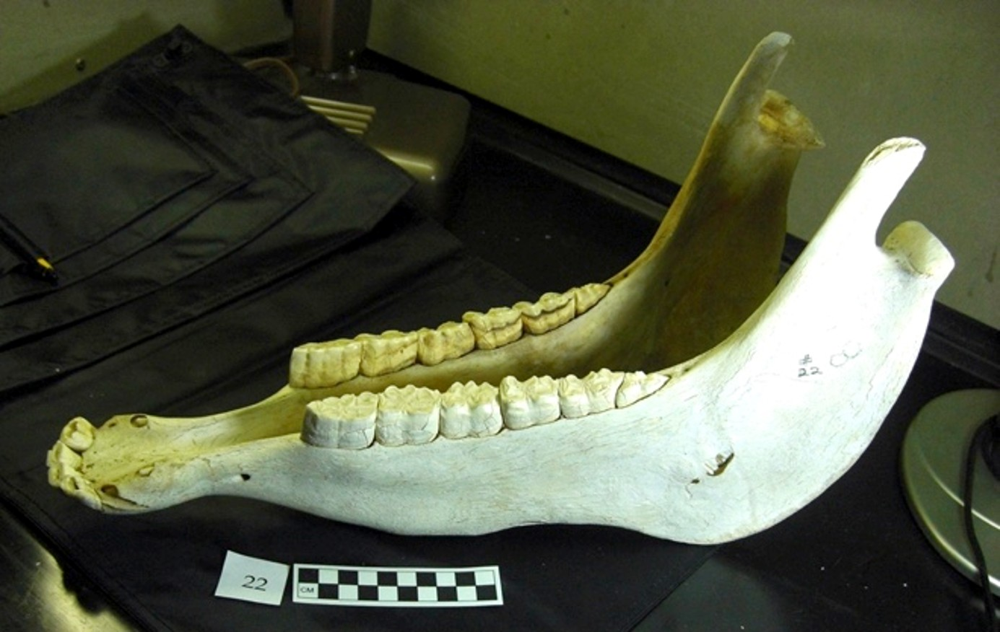
How Can We Prove Horseback Riding?
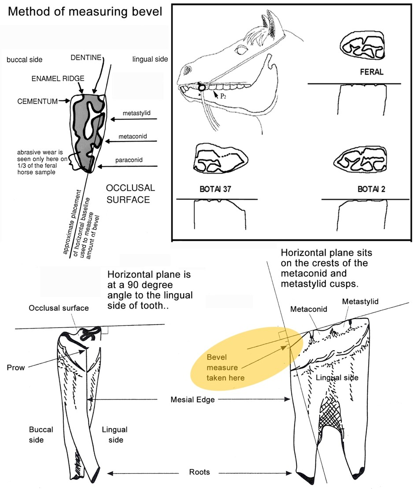
The Yamnaya
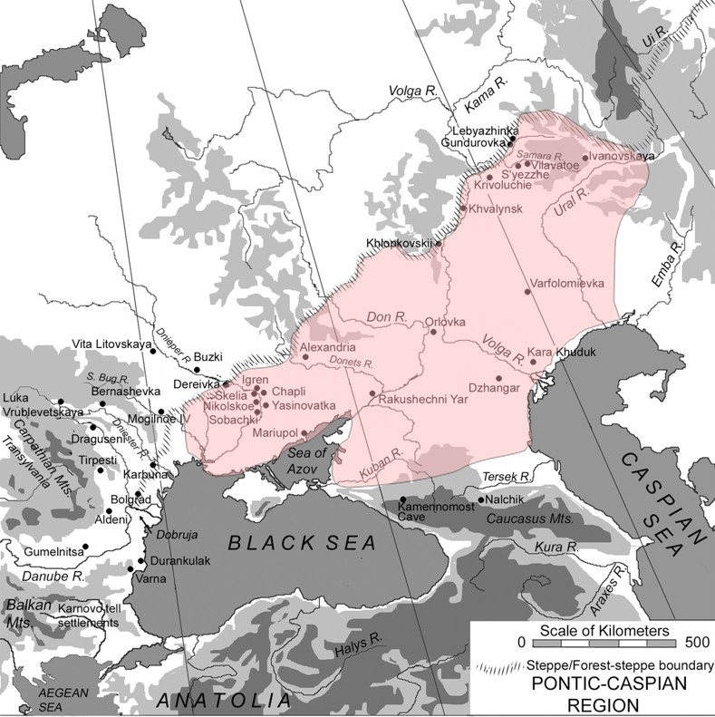
Yamnaya & DNA Evidence
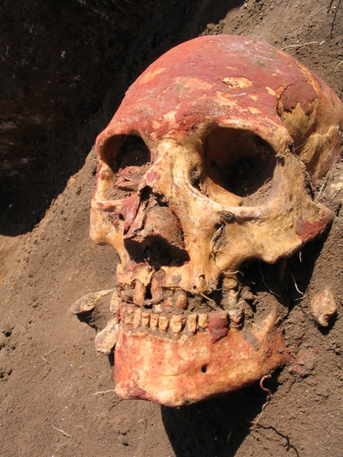
Back to Primal
How did we make Wenja and Izila?
- Two languages, but very similar in structure.
Making Izila
- Stay as true to PIE as possible
- Avoid overlong words
- Eliminate grammar that is unnecessary for in-game translation
- Make as phonologically distinct from Wenja as possible
- Not too hard — actors have to pronounce it!
Making Wenja & Udam
Design to be more archaic: proto-PIE
How? Identify archaic alternations in PIE and assume them to be part of an earlier stage of the language.
- kick–kicked, kiss–kissed (regular) vs. sing–sang–sung, ring–rang–rung (alternation)
- cf. Lat. tego ‘cover’ ~ toga ‘covering’
- Alternation goes back to PIE
Example: kwis ‘who’, kwid ‘what’, etc. = question words → Wenja ku ‘?’
Final Product
| Version | Text |
|---|---|
| English | Once there was a king. He was childless. The king wanted a son. He asked his priest: “May a son be born to me!” |
| PIE | ʁrḗḱs hest; só n̥putlós. ʁrḗḱs súχnum wl̥nhto. tósi̯o ǵʰéutorm̥ prēḱst: “súχnus moi̯ ǵn̥hyetōd!” |
Final Product
| Version | Text |
|---|---|
| Izila | hréks hest; só nputlós. hréks súxnum welhet. tósyo blágmenəm préket: “súxnus moy génhetu!” |
| Wenja | sams fraji. san putila. fraji sushnu walha. si-blajiman pracha: “u sushnu miyi janha!” |
Audio Recordings
Working with Actors
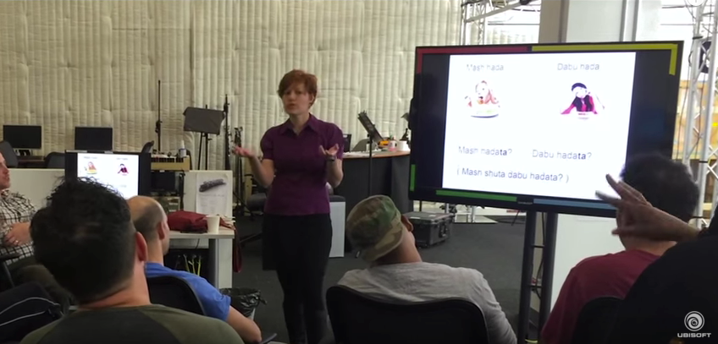
Filming the Scenes
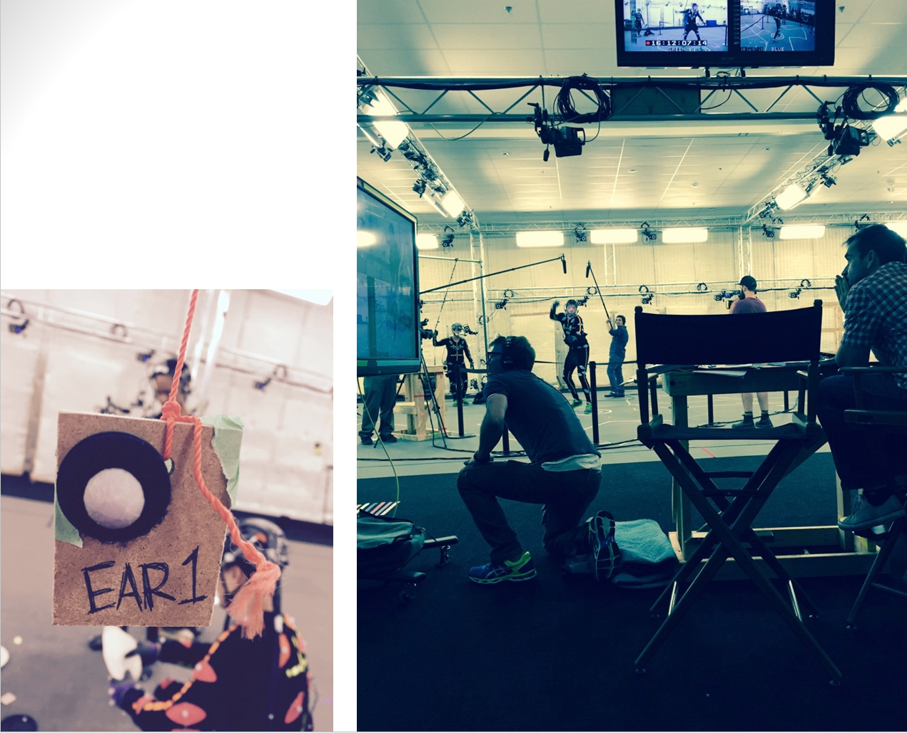
And we got to make cool scenes like this one
Was there a writing system?
Yes, but not one that’s canon.
The Primal Script
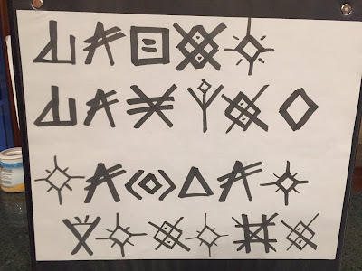
The Primal Script
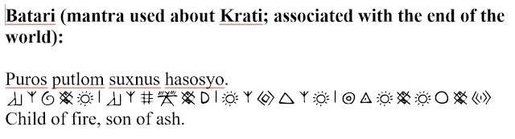
The Primal Script
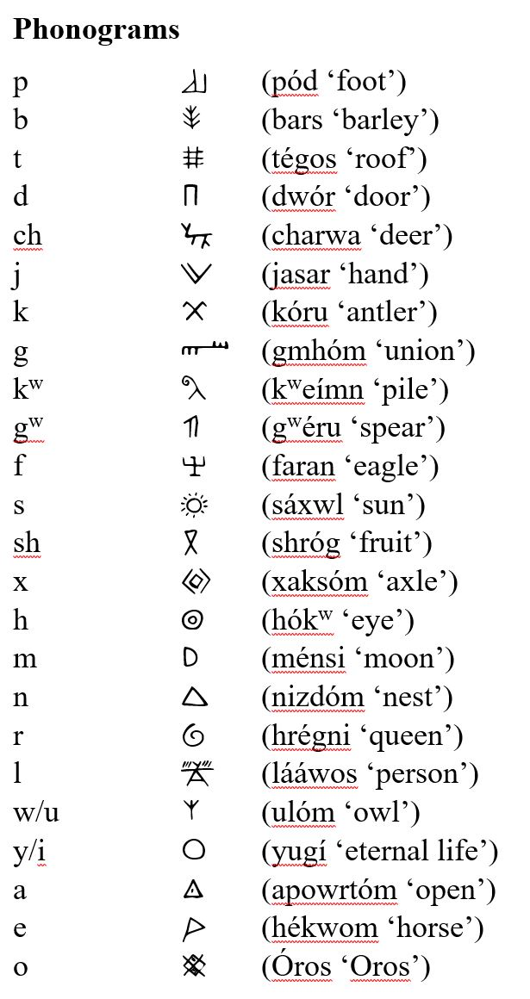
The Primal Script

The Primal Script
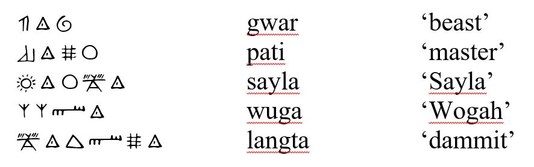
The Primal Script
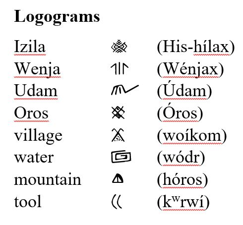
The Primal Script
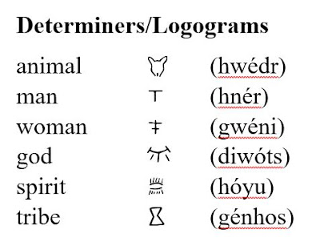
The Primal Script
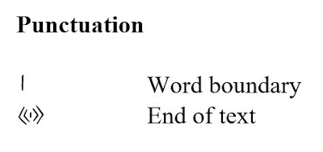
The Primal Script
smarkaka:mw:MANWENJApaty:hay:nawa: kraybaty:TRIBEWENJAs#
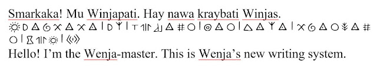
The Vinča “Script”
Where did I get those symbols?
Where did I get those symbols?
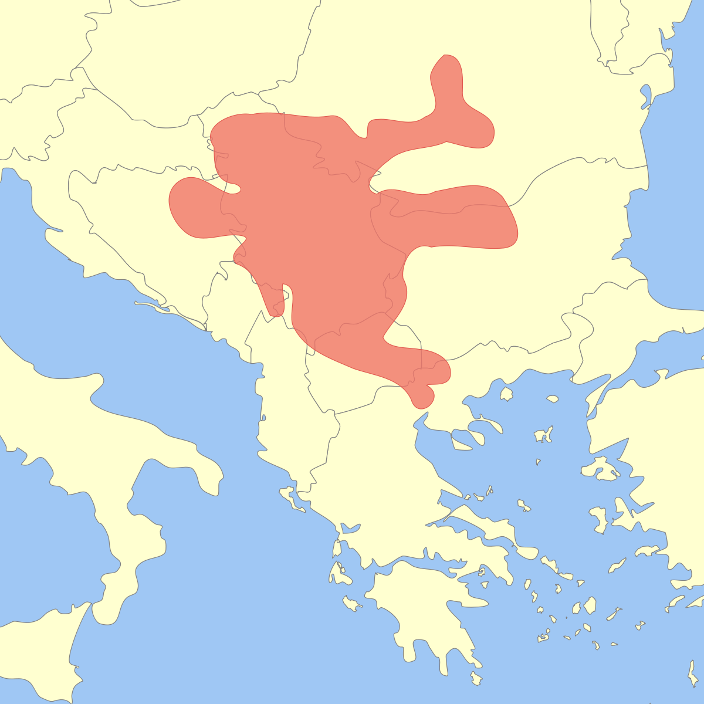
What Is the Vinča Script?
- Also called the Old European Script or Danube Script
- Found on pottery, figurines, and artifacts throughout the Central Balkans
- Centered around the Vinča culture, southeast of modern Belgrade
- Symbols date to 8000–6500 years ago (6000–4500 BCE)
- Over 700 distinct signs identified
Where Was It Found?
- Spread across a wide area: modern-day Serbia, Romania, Bulgaria, Greece
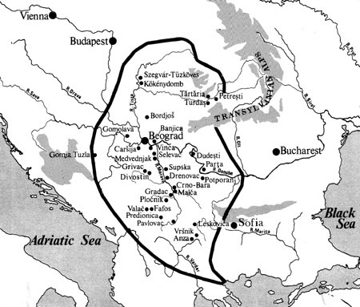
Where Was It Found?
- Found consistently across sites separated by hundreds of miles
- Symbols appear on:
- Pottery and ceramic vessels
- Figurines (especially anthropomorphic ones)
- Spindle whorls and weights
- Fired clay tablets
The Tărtăria Tablets
- Discovered in 1961 in Tartaria, Romania
- Three small clay tablets with incised symbols

The Tărtăria Tablets
- Dated to around 5300 BCE — older than early Sumerian writing
- Sparked debate: did writing originate in Europe, not Mesopotamia?
- Problem: likely not writing in any meaningful sense
What Do the Symbols Look Like?
- Largely geometric: lines, chevrons, spirals, crosses, meanders
- Some appear pictographic (resembling plants, animals, humans)
- No clear directionality — no consistent left-to-right or top-to-bottom
- No obvious syntax — symbols don’t combine in rule-governed ways
Hunting Scene?
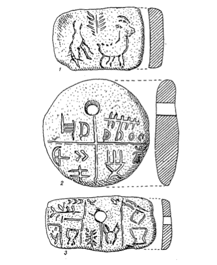
Is It Writing?
For something to count as writing, it must:
- Represent language — specific words, sounds, or grammar
- Be decipherable by someone who knows the language
- Show systematic correspondence between symbol and meaning
Vinča symbols meet none of these criteria conclusively
That said, it’s not just random symbols!
Shan Winn: “Internal analysis of the Vinca signs supports the conclusion that the signs are conventionalised and standardised, and that they represent a corpus of signs known and used over a wide area for several centuries.”
Likely isn’t writing — it’s proto-writing: conveys a message, but isn’t language
Slide 65
Shan Winn
“Internal analysis of the Vinca signs supports the conclusion that the signs are conventionalised and standarised, and that they represent a corpus of signs known and used over a wide area for several centuries.”
Likely isn’t writing – it’s proto-writing Conveys a message, but isn’t language